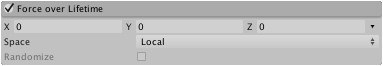

Force Over Lifetime module
Particles can be accelerated by forces (such as wind or attraction) that are specified in this module.

Properties
| Property | Function |
|---|---|
| X, Y, Z | Force applied to each particle in the X, Y and Z axes. |
| Space | Selects whether the force is applied in local or world space. |
| Randomize | When using the Two Constants or Two Curves modes, this causes a new force direction to be chosen on each frame within the defined ranges. This causes more turbulent, erratic movement. |
Details
Fluids are often affected by forces as they move. For example, smoke will accelerate slightly as it rises from a fire, carried up by the hot air around it. Subtle effects can be achieved by using curves to control the force over the particles' lifetimes. Using the previous example, smoke will initially accelerate upward but as the rising air gradually cools, the force will diminish. Thick smoke from a fire might initially accelerate, then slow down as it spreads and perhaps even start to fall to earth if it persists for a long time.